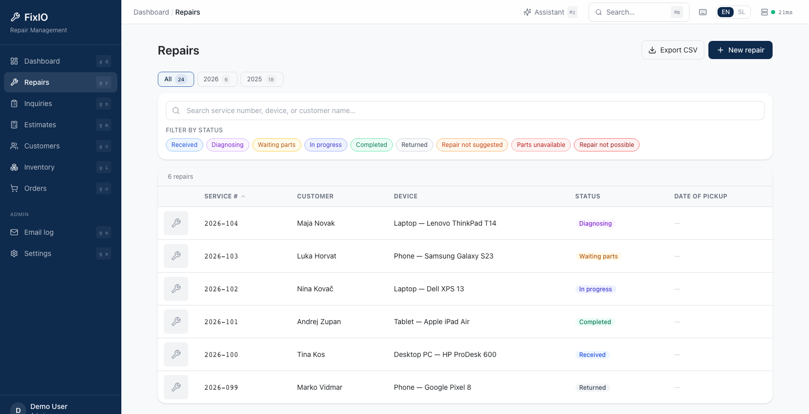

FIXIO / Repairs01

01 / Service tickets
Every repair has a clear next step.
Follow a device from intake and diagnosis through parts, repair, completion, and return. Keep its service number, customer, photos, work notes, and status together.
- Search and filter the repair queue
- Capture photos, notes, and service reports
- See the status before the next call